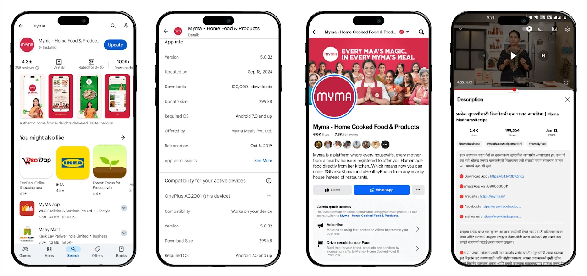
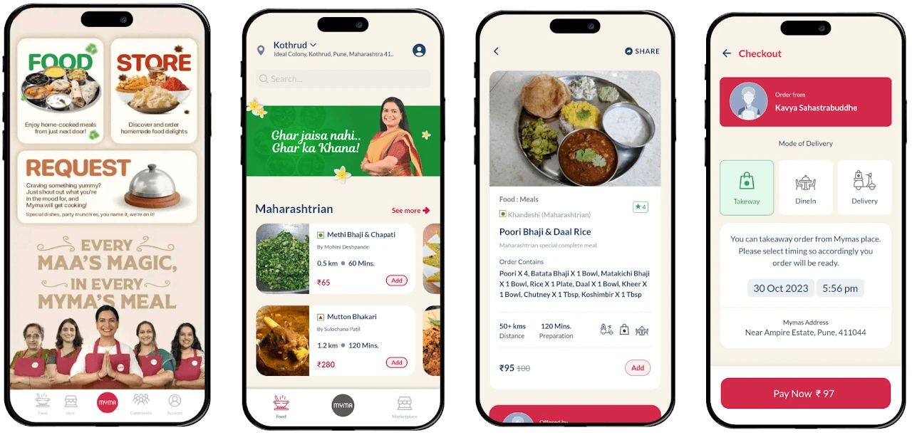
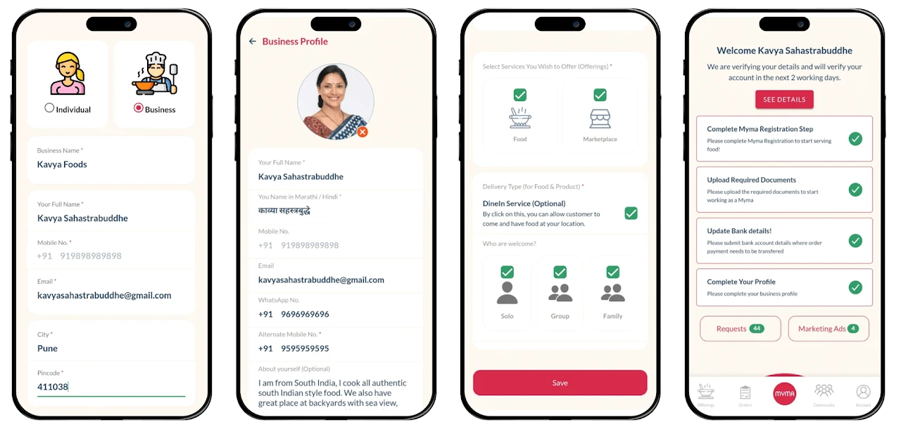
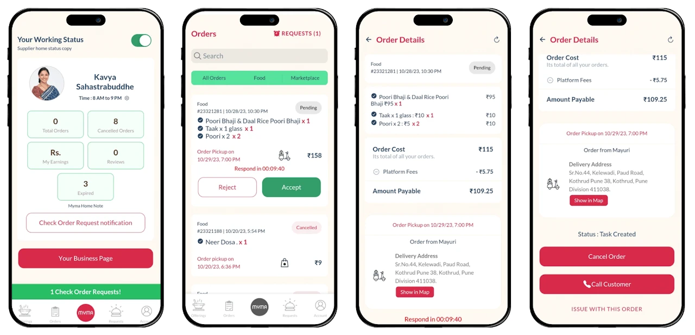
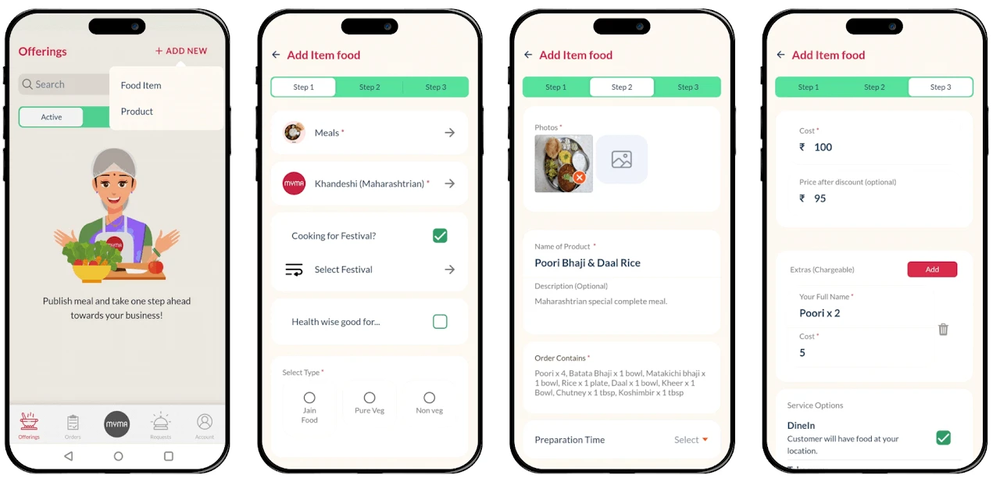

Project
Myma
This project focused on connecting home chefs with customers and building a system where everyday cooking could become a source of income.
The core challenge was trust and consistency, not just building a food platform.
Understanding
Homemakers had the skill but no structured way to reach customers.
Customers wanted home-style food but were unsure about quality and reliability.
The gap was not demand or supply. It was trust and a clear system.
Approach
Instead of treating it like a typical food app, the focus was on building trust first.
The system was planned around familiarity, consistency, and making it easy for both sides to use.
Execution
Onboarding was simplified so more home chefs could join easily.
Subscription-based ordering helped create consistency.
WhatsApp was used to reduce friction and support operations at scale.
My Role
I worked on understanding the problem, shaping the product, and executing it end to end.
This included research, UX, onboarding flows, and improving how users interacted with the platform.
Outcome
• 100K+ app downloads
• 47K+ home chefs onboarded
• Registrations improved significantly after onboarding changes
• Orders increased with subscription model
• Reduced operational effort using automation
• Strong user acquisition through community campaigns
Product Experience





Media and Campaigns